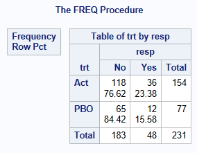
Confidence Intervals for Independent Proportions in SAS
Introduction
This page covers confidence intervals for comparisons of two independent proportions in SAS, including the contrast parameters for risk difference (RD) \(\theta_{RD} = p_1 - p_2\), relative risk (RR) \(\theta_{RR} = p_1 / p_2\), and odds ratio (OR) \(\theta_{OR} = p_1(1-p_2) / (p_2(1-p_1))\).
See the summary page for general introductory information on confidence intervals for proportions, including the principles underlying the most common methods.
Caution is required if there are no responders (or all responders) in both groups, which might happen in a subgroup analysis for example. PROC FREQ (as of v9.4) does not output any confidence intervals in this case, when valid CIs can (and should) be reported for the RD contrast, since the dataset provides an estimate of zero for RD (and the confidence in the estimate is proportional to the sample size). Similarly, if \(\hat p_1 = \hat p_2 = 1\) then an estimate and confidence interval can be obtained for RR, but not from PROC FREQ.
Data used
The adcibc data stored here was used in this example, creating a binary treatment variable trt taking the values of Act or PBO and a binary response variable resp taking the values of Yes or No. For this example, a response is defined as a score greater than 4.
proc import datafile = 'data/adcibc.csv'
out = adcibc
dbms = csv
replace;
getnames = yes;
guessingrows = max;
run;
data adcibc2 (keep=trt resp) ;
set adcibc;
if aval gt 4 then resp="Yes";
else resp="No";
if trtp="Placebo" then trt="PBO";
else trt="Act";
run;
* Sort to ensure that the outcome of interest ("Yes" in this example) is first;
* when using default COLUMN=1 option in the TABLES statement;
proc sort data=adcibc2;
by trt descending resp;
run; The below shows that for the Active Treatment, there are 36 responders out of 154 subjects, p1 = 0.2338 (23.38% responders), while for the placebo treatment p2 = 12/77 = 0.1558, giving a risk difference of 0.0779, relative risk 1.50, and odds ratio 1.6525.
proc freq data=adcibc2;
table trt*resp/ nopct nocol;
run;Methods for Calculating Confidence Intervals for Proportion Difference from 2 independent samples
This paper describes many methods for the calculation of confidence intervals for 2 independent proportions. The 2-sided and 1-sided performance of many of the same methods have been compared graphically1. According to a recent paper2, the most commonly reported method in non-inferiority clinical trials for antibiotics is the Wald asymptotic normal approximation (despite its well-documented poor performance), followed by the Miettinen-Nurminen (asymptotic score) method. More recently, an improved variant of the Miettinen-Nurminen method (SCAS) was developed, by including a skewness correction designed to optimise the performance in terms of one-sided coverage for NI testing. SCAS corrects the slightly asymmetrical coverage of the Miettinen-Nurminen interval (note the skewness is more pronounced when analysing the RR contrast, and/or when group sizes are imbalanced).
SAS PROC FREQ is able to calculate CIs for RD using the following methods: Agresti/Caffo (AC), Miettinen and Nurminen (MN or SCORE), Mee (MN(Mee)), Newcombe Hybrid Score (MOVER), and Wald. For conservative coverage, there is the ‘Exact’ method, or continuity-adjusted versions of the Wald and Newcombe methods, and also the Hauck-Anderson (HA) continuity-adjustment.
The SCAS method is not available in PROC FREQ, but can be produced using a SAS macro (%SCORECI) which can be downloaded from https://github.com/petelaud/ratesci-sas.
Normal Approximation Method (Also known as the Wald Method)
The difference between two independent sample proportions is calculated as: \(\hat \theta_{RD} = \hat p_1 - \hat p_2 = x_1 / n_1 - x_2 / n_2\)
The Wald CI for \(\theta_{RD}\) is calculated using:
\(\hat \theta_{RD} \pm z_{\alpha/2} \times SE(\hat \theta_{RD})\),
where \(SE (\hat \theta_{RD}) = \sqrt{( \frac{\hat p_1 (1-\hat p_1)}{n_1} + \frac{\hat p_2 (1-\hat p_2)}{n_2})}\)
With continuity correction, the equation becomes
\(\hat \theta_{RD} \pm (CC + z_{\alpha/2} \times SE(\hat \theta_{RD}))\),
where \(CC = \frac{1}{2} (\frac{1}{n_1} + \frac{1}{n_2})\)
Newcombe Method (Also known as the Hybrid Score method, Square-and-Add, or the Method of Variance Estimates Recovery (MOVER) )
Derive the confidence intervals for the separate proportions in each group, \(p_1\) and \(p_2\), using the Wilson Score Method equations as described here.
Let \(l_1\) = Lower CI for sample 1, and \(u_1\) be the upper CI for sample 1.
Let \(l_2\) = Lower CI for sample 2, and \(u_2\) be the upper CI for sample 2.
Let D = \(\hat p_1 - \hat p_2\) (the difference between the observed proportions)
The CI for \(\theta_{RD}\) the difference between two proportions is: \[ D - sqrt((\hat p_1 - l_1)^2+(u_2 - \hat p_2)^2) \quad, \quad D + sqrt((\hat p_2 - l_2)^2 + (u_1 - \hat p_1)^2 ) \]
Note that earlier versions of SAS PROC FREQ (before implementation of the MN method) allowed the option CL=WILSON or CL=SCORE to produce this method, but it is not really a score method. As of SAS/STAT 15.4, the CL=WILSON option (undocumented) still gives the Newcombe interval, but CL=SCORE gives the Miettinen-Nurminen score method.
Miettinen-Nurminen, Mee and other Asymptotic Score Methods
These truly are score methods, as they are based on an extension of the score methodology applied to two independent proportions, using the contrast function \(S(\theta) = \hat p_1 - \hat p_2 - \theta\), which for any given value of \(\theta\) has expectation zero, and variance \(\{\tilde p_1 (1 - \tilde p_1)/n_1 + \tilde p_2 (1 - \tilde p_2)/n_2\} \times N/(N-1)\) where \(N = n_1 + n_2\).
The Mee variant of the method omits the \(N/(N-1)\) variance bias correction factor (sometimes referred to as an \('N-1'\) correction).
Gart and Nam derived a similar method, arrived at from a different underlying ‘efficient score’ methodology, so the formulae look different but are essentially equivalent to the Mee interval. They added a correction for skewness to improve one-sided coverage. The skewness correction was applied to the Miettinen-Nurminen formula for all contrast parameters by Laud, to give the SCAS method3. The SCAS method is available for SAS via the %SCORECI macro.
Agresti-Caffo Method
Similar to the Agresti-Coull method for a single proportion, the Agresti-Caffo interval is designed to be an easily taught method to enable the CI to be calculated by hand. The formula involves simply adding one success and one failure to each sample, and then using the Wald formula.
‘Exact’ Methods
To obtain ‘exact’ confidence intervals, you need to add an EXACT RISKDIFF statement to the PROC FREQ.
The current default method produced by PROC FREQ (METHOD=SCORE) is the Chan-Zhang variant. This is undoubtedly an improvement on the extremely over-conservative Santner-Snell method (obtained with the RISKDIFF(METHOD=NOSCORE) option in the EXACT statement), but is more computationally intensive, and can result in a Warning in the SAS log about long computation times.
The third alternative ‘exact’ method by Agresti & Min (RISKDIFF(METHOD=SCORE2)) is less conservative, but is only guaranteed to achieve strictly conservative two-sided coverage, so is not appropriate for use in one-sided hypothesis testing.
Methods for Calculating Confidence Intervals for Relative Risk or Odds Ratio from 2 independent samples
Selected methods have been compared graphically for their 1-sided performance3, see supplementary material, with the observation that optimum 2-sided coverage follows directly from optimum 1-sided coverage (while the reverse is not true). It has been noted previously that the ratio contrasts suffer a greater imbalance in 1-sided coverage than RD4. Therefore, skewness correction is particularly valuable here, but it is not available in SAS PROC FREQ.
SAS PROC FREQ is able to calculate CIs for RR or OR using the following methods: Miettinen-Nurminen (SCORE), Likelihood Ratio (LR), Wald, Haldane Modified Wald. There is also a second version of the Asymptotic Score method (which for RR is the Koopman method) omitting the ‘N-1’ variance bias correction, using the CL=(SCORE(CORRECT=NO)) option - note this is NOT referring to a ‘continuity correction’ (and also note that no indication is given in the output that this option has been applied). For OR, an additional CL=MIDP option is also available.
For RR, there are two versions of the ‘Wald’ method (also known as the Katz log and adjusted log methods), which are based on an assumption that log(RR) is distributed normally with variance \(1/x_1 + 1/x_2 - 1/n_1 - 1/n_2\). The adjusted version adds 0.5 to each denominator to permit calculation of an interval when no events are observed in one of the groups.
Similarly, there are two versions of the ‘Wald’ method for OR (also known as the Woolf logit and Gart adjusted logit intervals). SAS documentation attributes the adjustments for both contrasts to Haldane, but they are the same adjustments.
For conservative coverage, the ‘Exact’ methods are provided. For RR this includes the 3 variants described above for RD, while only one version is given for OR. Run times for the METHOD=SCORE version for RR may be lengthy (but the faster alternative Santner-Snell version produces a fairly uninterpretable interval of [0.03, 23698] for the example dataset used in this article). Continuity adjustments are not implemented for any method for RR or OR.
The SCAS method (which addresses asymmetric one-sided coverage of the MN Score method which is particularly pronounced for RR, and also adds a further bias correction for OR5), is not available in PROC FREQ, but is given by the SAS macro %SCORECI.
Continuity Adjusted Methods
SAS provides an option (CORRECT) to apply continuity adjustment to the Wald or Newcombe methods for more conservative coverage, but this only applies for the RISKDIFF contrast, not RELRISK or ODDSRATIO. The Hauck-Anderson (HA) method for RD is a slightly less conservative variation of a continuity adjustment. Note however that all of these methods fail to achieve strictly conservative coverage, although the adjusted Newcombe method comes close1.
It is important to note that the CORRECT sub-option for the MN/Score method serves an entirely different purpose. The Miettinen-Nurminen method is not a ‘continuity-corrected’ version of the Mee interval. Rather, the CORRECT=NO option removes the variance bias correction factor N/(N-1) from the Miettinen-Nurminen formula in order to produce the Mee version of the score method for RD (and equivalent un-corrected score methods for RR (Koopman) and OR).
No continuity adjustment is currently available for the score methods in SAS. A ‘sliding scale’ adjustment has been described1 and implemented for MN and SCAS in the ratesci package for R, but not yet added to the %SCORECI macro.
Consistency with Hypothesis Tests
Within SAS PROC FREQ for the asymptotic methods for RD, consistency with a traditional Chi-squared test for association (Karl Pearson version), and the Farrington-Manning test for non-inferiority, is provided by the Mee CI (CL=SCORE(CORRECT=MEE)). That method is similar to MN but without the ‘N-1’ correction factor (the omission of which produces coverage that is slightly below the nominal confidence level on average, instead of slightly above). Note that the MN method (including the correction factor) is consistent with the Egon Pearson ‘N-1’ version of the chi-squared test6. SAS PROC FREQ does not produce that test, nor does it offer the option to include the ‘N-1’ adjustment when requesting a non-inferiority test with the NONINF option. Consequently, there is a risk of contradictory results if using PROC FREQ to obtain a MN CI with a corresponding non-inferiority test.
For the SCAS or MN methods, the %SCORECI macro provides the p-value for a specified NI margin, with guaranteed consistency with the CI.
If an EXACT statement is used to produce CIs, SAS does not offer any matching hypothesis tests for NI or equivalence testing.
Example Code using PROC FREQ
It is important to check the output to ensure that you are modelling Active - Placebo, and response = Yes (not Response=No). By default SAS sorts alphabetically and calculates CI’s for the first column. You can change this by using the COLUMN= Option in riskdiff or by sorting the dataset (here by trt, then descending resp), and then using order=data in the proc freq. This tells SAS to use the order you have sorted the data by. SAS confirms this by saying “Difference is (Row 1 - Row 2)” and “Column 1 (resp=Yes)”.
Similarly for relrisk, although the output does not state that the RR is calculated as (Row 1) / (Row 2). If treatment groups are labelled differently, you might need to sort by descending trt to obtain the correct contrast (note that unlike for RD, the same result cannot be obtained by setting COLUMN=2).
SAS output often rounds to 3 or 4 decimal places in the output window, however the full values can be obtained using SAS ODS statements.
****************************;
*** Risk Difference examples;
****************************;
*** Wald, Newcombe, Agresti/Caffo, and Miettinen-Nurminen methods;
proc freq data=adcibc2 order=data;
table trt*resp /riskdiff(CL=(wald newcombe ac mn);
run;
*** Mee score method;
proc freq data=adcibc2 order=data;
table trt*resp /riskdiff(CL=(mn(mee) norisks);
run; 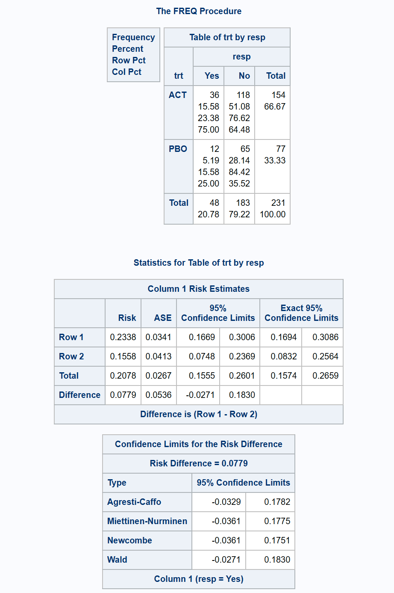
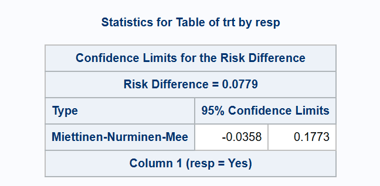
*** exact (Chan-Zhang) and continuity-adjusted methods for conservative coverage;
proc freq data=adcibc2 order=data;
exact riskdiff (method=noscore);
table trt*resp/riskdiff(CL=(exact ha wald(correct) newcombe(correct)) norisks);
run;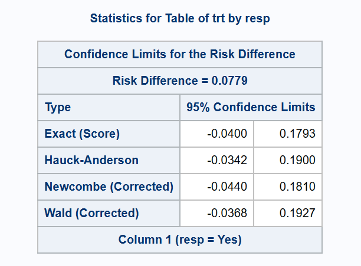
*** exact (Santner-Snell) method;
proc freq data=adcibc2 order=data;
exact riskdiff (method=noscore);
table trt*resp/riskdiff(CL=exact norisks);
run;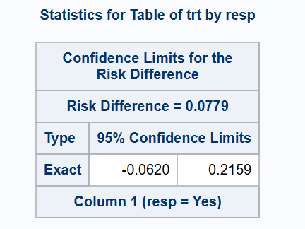
*** 2-sided exact (Agresti-Min) method;
proc freq data=adcibc2 order=data;
exact riskdiff (method=score2);
table trt*resp/riskdiff(CL=exact norisks);
run;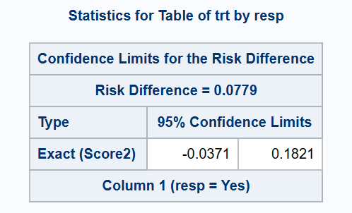
*** MN and SCAS methods from %SCORECI macro;
*** First manipulate the data to a form for input to the macro;
proc tabulate data=adcibc2 out=tab2;
class trt resp;
table (resp all),trt;
run;
data ds(keep = n1 n0 e1 e0);
set tab2;
by _page_;
retain n1 n0 e1 e0;
* Initialise counts in case there are none in the observed data;
if first._page_ then do;
e1 = 0;
e0 = 0;
end;
if upcase(trt) = "ACT" then do;
if _type_ = "11" and resp = "Yes" then e1 = n;
if _type_ = "10" then n1 = n;
end;
else if upcase(trt) = "PBO" then do;
if _type_ = "11" and resp = "Yes" then e0 = n;
if _type_ = "10" then n0 = n;
end;
if last._page_ then output;
run;
*** Miettinen-Nurminen CI - macro from https://github.com/petelaud/ratesci-sas;
%scoreci(ds, stratify=FALSE, skew=FALSE);
*** Mee Asymptotic Score CI - macro from https://github.com/petelaud/ratesci-sas;
%scoreci(ds, stratify=FALSE, skew=FALSE, bcf=FALSE);
*** SCAS CI - macro from https://github.com/petelaud/ratesci-sas;
%scoreci(ds, stratify=FALSE);
*** Farrington-Manning NI test (p=0.0248) contradicts MN interval (LCL < -0.036);
*** (Arbitrary NI margin of -0.036 used for illustration)
proc freq data=adcibc2 order=data;
table trt*resp / riskdiff(CL=mn noninf margin=0.036 method=score);
run;
*** Miettinen-Nurminen CI with consistent NI test: PVAL_R > 0.025;
%scoreci(ds, stratify=FALSE, skew=FALSE, delta=-0.036);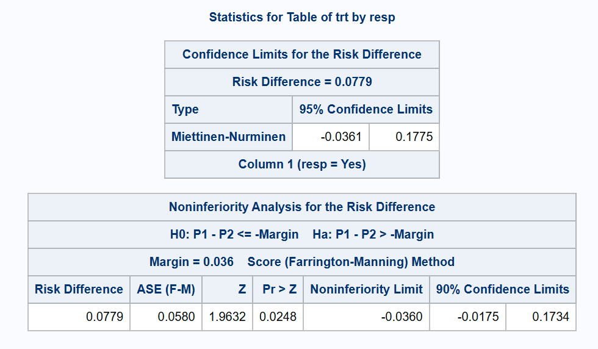
****************************;
*** Relative risk examples;
****************************;
*** Wald, LR, and Miettinen and Nurminen methods;
proc freq data=adcibc2 order=data;
table trt*resp /relrisk(CL=(wald waldmodified lr score));
run;
*** Koopman Asymptotic Score method without the 'N-1' correction;
proc freq data=adcibc2 order=data;
table trt*resp /relrisk(CL=(score(correct=no)));
run; 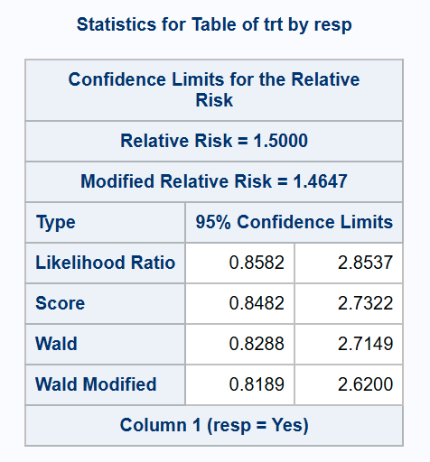
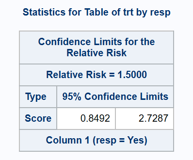
*** Exact method (Chan-Zhang);
proc freq data=adcibc2 order=data;
exact relrisk;
table trt*resp/relrisk(CL=(exact));
run;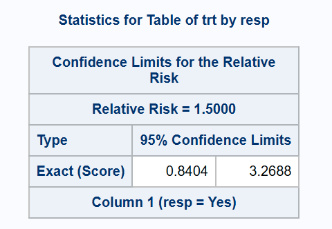
*** Exact (Santner-Snell);
proc freq data=adcibc2 order=data;
exact relrisk (method=noscore);
table trt*resp / relrisk(CL=exact);
run;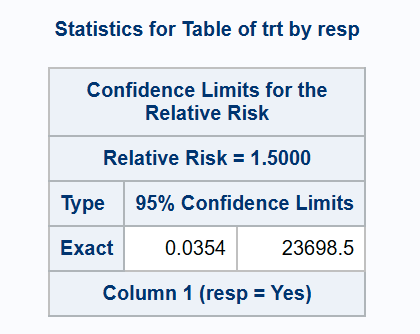
*** 2-sided exact (Agresti-Min) method;
proc freq data=adcibc2 order=data;
exact relrisk (method=score2);
table trt*resp / relrisk(CL=exact);
run;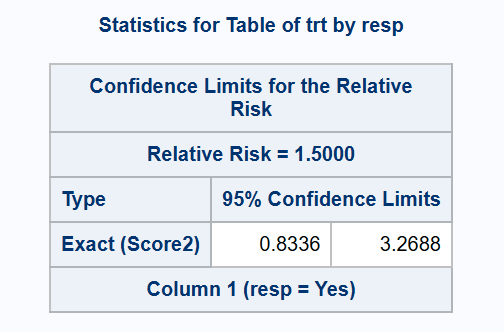
*** Miettinen-Nurminen Asymptotic Score CI - macro from https://github.com/petelaud/ratesci-sas;
%scoreci(ds, stratify=FALSE, skew=FALSE, contrast=RR);
*** Koopman Asymptotic Score CI - macro from https://github.com/petelaud/ratesci-sas;
%scoreci(ds, stratify=FALSE, skew=FALSE, bcf=FALSE, contrast=RR);
*** SCAS CI - macro from https://github.com/petelaud/ratesci-sas;
%scoreci(ds, stratify=FALSE, contrast=RR);****************************;
*** Odds Ratio examples;
****************************;
* Wald, LR, mid-P and Miettinen and Nurminen methods;
proc freq data=adcibc2 order=data;
table trt*resp /or(CL=(wald waldmodified lr score midp));
run;
* Asymptotic Score method without 'N-1' correction;
proc freq data=adcibc2 order=data;
table trt*resp /or(CL=(score(correct=no)));
run; 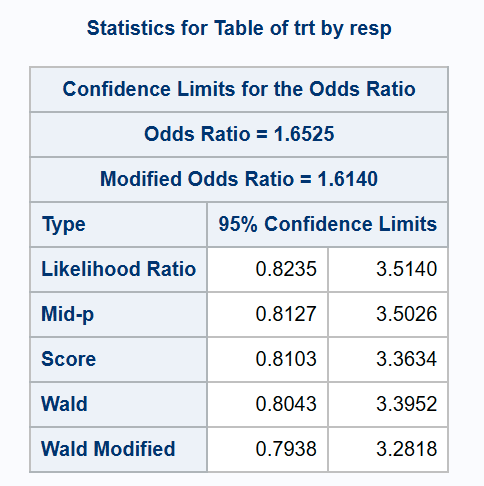
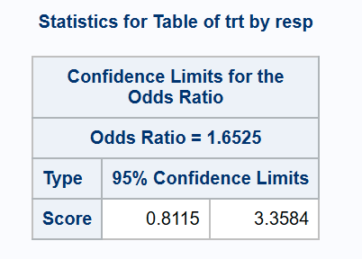
*** 'exact' method;
proc freq data=adcibc2 order=data;
exact or;
table trt*resp/or(CL=(exact));
run;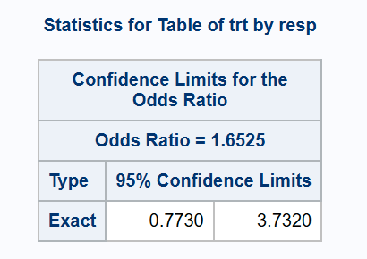
*** Miettinen-Nurminen CI;
%scoreci(ds, stratify=FALSE, skew=FALSE, orbias=FALSE, contrast=OR);
*** SCAS CI - macro from https://github.com/petelaud/ratesci-sas;
%scoreci(ds, stratify=FALSE, contrast=OR);References
1.
Laud, P. J. & Dane, A. Confidence intervals for the difference between independent binomial proportions: Comparison using a graphical approach and moving averages. Pharmaceutical Statistics 13, 294–308 (2014).
2.
Bai, A. D. et al. Confidence interval of risk difference by different statistical methods and its impact on the study conclusion in antibiotic non-inferiority trials. Trials 22, (2021).
3.
Laud, P. J. Equal-tailed confidence intervals for comparison of rates. Pharmaceutical Statistics 16, 334–348 (2017).
4.
Gart, J. J. & Nam, J. Approximate interval estimation of the difference in binomial parameters: Correction for skewness and extension to multiple tables. Biometrics 46, 637 (1990).
5.
Laud, P. J. Equal-tailed confidence intervals for comparison of rates. Pharmaceutical Statistics 17, 290–293 (2018).
6.
Campbell, I. Chi-squared and fisherirwin tests of two-by-two tables with small sample recommendations. Statistics in Medicine 26, 3661–3675 (2007).